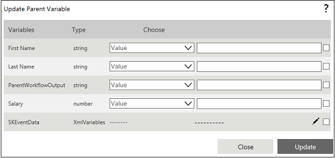

No
You can set the List Parent Variables for this activity in the Update Parent Variable property window.

Update Parent Variable property window
The Update Parent Variable property window has a grid that lists all the variables belonging to the parent workflow which are specified in the Parent Workflow Name property. Each row in the grid represents a parent workflow variable, showing the variable name and type under the respective columns. The window also contains the following controls to specify the value to update the variable with:
Note: For number data types, the minimum and maximum values are not validated. Enter only valid numeric values for number data types. For numeric, DateTime, Date, or Time data types, ensure that the respective value is based on the culture set. You can enter the input or use the Date and Time picker to enter the required date and time. The time format supports long data type to enable you to enter seconds. If you enter a valid value for a numeric, date, time, or datetime data type, and if you enter unwanted strings after the valid values, then while submitting the values, the extra strings at the end are truncated. For example, for a DateTime value entered as 01/31/2015 10:11:12ababa, then ababa is truncated by default.